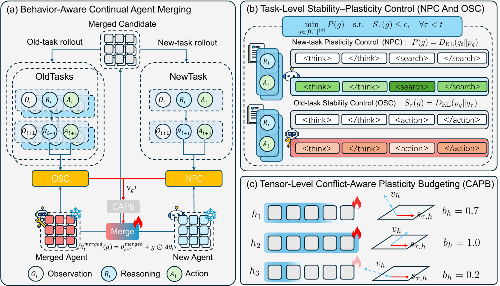

arXiv

Click to view method diagram ↗BACAM: Behavior-Aware Continual Agent Merging for Multi-Turn Interaction
arXiv preprint, 2026
Continually integrating specialized agents through behavior-aware model merging.
Abstract
BACAM combines specialized agents sequentially without retaining earlier experts. It trains parameter-wise merging gates on interaction trajectories, using expert guidance to acquire new behavior while limiting interference with existing capabilities. Task-level stability–plasticity control and tensor-level conflict budgets guide these updates. The gates are folded into model weights, adding no inference-time parameters. Across web shopping, tool use, information retrieval, and embodied interaction, BACAM achieves an average success rate of 62.82%, improving on the strongest evaluated merging baseline by 21.69 percentage points.
Read the full abstract on arXiv ↗BibTeX
@misc{li2026bacam,
title = {BACAM: Behavior-Aware Continual Agent Merging
for Multi-Turn Interaction},
author = {Shuaitong Li and Baochen Xiong and
Xiaoshan Yang and Xizhe Zheng and Yifan Xu and
Jianhao Huang and Changsheng Xu},
year = {2026},
eprint = {2610.04966},
archivePrefix = {arXiv},
primaryClass = {cs.AI},
url = {https://arxiv.org/abs/2610.04966}
}